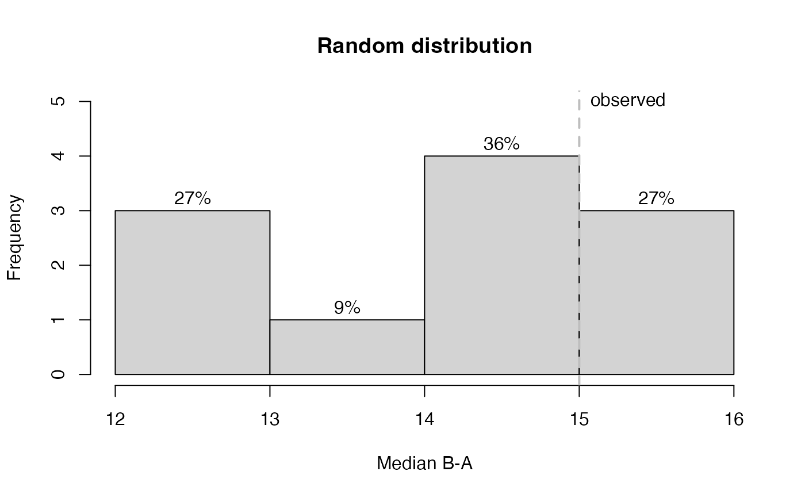

The rand_test function computes a randomization test for single or multiple
baseline single-case data. The function is based on an algorithm from the
SCRT package (Bulte & Onghena, 2009, 2012), but rewritten and extended for
the use in AB designs.
Usage
rand_test(
data,
dvar,
pvar,
statistic = c("Mean B-A", "Mean A-B", "Median B-A", "Median A-B", "Mean |A-B|",
"Median |A-B|", "SMD hedges", "SMD glass", "W-test", "T-test", "NAP",
"NAP decreasing", "Slope B-A", "Slope A-B"),
statistic_function = NULL,
number = 500,
complete = FALSE,
limit = 5,
startpoints = NA,
exclude.equal = FALSE,
phases = c(1, 2),
graph = FALSE,
output = NULL,
seed = NULL
)Arguments
- data
A single-case data frame. See
scdf()to learn about this format.- dvar
Character string with the name of the dependent variable. Defaults to the attributes in the scdf file.
- pvar
Character string with the name of the phase variable. Defaults to the attributes in the scdf file.
- statistic
Defines the statistic on which the comparison of phases A and B is based on. Default setting is
statistic = "Mean B-A". See details.- statistic_function
A list with a user defined function to calculate the statistic. When set, overwrites the
statisticargument. See details.- number
Sample size of the randomization distribution. The exactness of the p-value can not exceed \(1/number\) (i.e.,
number = 100results in p-values with an exactness of one percent). Default isnumber = 500. For faster processing usenumber = 100. For more precise p-values setnumber = 1000).- complete
If TRUE, the distribution is based on a complete permutation of all possible starting combinations. This setting overwrites the number Argument. The default setting is FALSE.
- limit
Minimal number of data points per phase in the sample. The first number refers to the A-phase and the second to the B-phase (e.g.,
limit = c(5,3)). If only one number is given, this number is applied to both phases. Default islimit = 5.- startpoints
Alternative to the
limit-parameterstartpointsexactly defines the possible start points of phase B (e.g.,startpoints = 4:9restricts the phase B start points to measurements 4 to 9.startpointsoverruns thelimit-parameter.- exclude.equal
If set to
exclude.equal = FALSE, which is the default, random distribution values equal to the observed distribution are counted as null-hypothesis conform. That is, they decrease the probability of rejecting the null-hypothesis (increase the p-value).exclude.equalshould be set toTRUEif you analyse one single-case design (not a multiple baseline data set) to reach a sufficient power. But be aware, that it increases the chance of an alpha-error.- phases
A vector of two characters or numbers indicating the two phases that should be compared. E.g.,
phases = c("A","C")orphases = c(2,4)for comparing the second to the fourth phase. Phases could be combined by providing a list with two elements. E.g.,phases = list(A = c(1,3), B = c(2,4))will compare phases 1 and 3 (as A) against 2 and 4 (as B). Default isphases = c(1,2).- graph
If
graph = TRUE, a histogram of the resulting distribution is plotted. It isFALSEby default. Note: use the more versatileplot_rand()function instead.- output
(deprecated and not implemented)
- seed
A seed number for the random generator.
Value
- statistic
Character string from function call (see
Argumentsabove).- N
Number of single-cases.
- n1
Number of data points in phase A.
- n2
Number of data points in phase B.
- limit
Numeric from function call (see
Argumentsabove).- startpoints
A vector defining the start points passed from the function call (see
Argumentsabove).- p.value
P-value of the randomization test for the given data.
- number
Sample size of randomization distribution from function call (see
Argumentsabove).- complete
Logical argument from function call (see
Argumentsabove).- observed.statistic
Test statistic observed for the given single-case data. (see
statisticin theArgumentsabove.)- Z
Z-value of observed test statistic.
- p.z.single
Probability of z-value.
- distribution
Test statistic distribution from randomized data sets.
- possible.combinations
Number of possible combinations under the given restrictions.
- auto.corrected.number
TRUEindicates that a corrected number of combinations was used. This happens, if the number of possible combinations (under the given restrictions) undercuts the requestednumberof combinations.- ecxlude.equal
see argument above
Details
Predefinded statisic
Use the statistic argument to choose a predefnied statistic. The
following comparisons are possible:
Mean A-B: Uses the difference between the mean of phase A and the mean of phase B. This is appropriate if a decrease of scores was expected for phase B.Mean B-A: Uses the difference between the mean of phase B and the mean of phase A. This is appropriate if an increase of scores was expected for phase B.Mean |A-B|: Uses the absolute value of the difference between the means of phases A and B.Median A-B: The same asMean A-B, but based on the median.Median B-A: The same asMean B-A, but based on the median.SMD hedges / SMD glass: Standardizes mean difference of B-A as Hedges's g or Glass' delta.NAP: Non-overlap of all pairs.W-test: Wilcoxon-test statistic W.T-test: T-test statistic t.
Create own statistic function
Use the statistic_function argument to proved your own function in a list.
This list must have an element named statistic with a function that takes
two arguments a and b and returns a single numeric value. E.g.
list(statistic = function(a, b) mean(a) - mean(b). A second element of the
list is named aggregate which takes a function with one numeric argument
that returns a numeric argument. This function is used to aggregate the
values of a multiple case design. If you do not provide this element, it uses
the default function(x) sum(x)/length(x). The third optional argument is
name which provides a name for your user function.
References
Bulte, I., & Onghena, P. (2009). Randomization tests for multiple-baseline designs: An extension of the SCRT-R package. Behavior Research Methods, 41, 477-485.
Bulte, I., & Onghena, P. (2012). SCRT: Single-Case Randomization Tests. Available from: https://CRAN.R-project.org/package=SCRT
Examples
## Compute a randomization test on the first case of the byHeart2011 data and include a graph
rand_test(byHeart2011[1], statistic = "Median B-A", graph = TRUE, seed = 123)

#> Randomization Test
#>
#> Comparing phase 1 against phase 2
#> Statistic: Median B-A
#>
#> Minimal length of each phase: A = 5 , B = 5
#> Observed statistic = 15
#>
#> Warning! The assigned number of random permutations exceeds the number of possible permutations.
#> Analysis is restricted to all possible permutations.
#>
#> Distribution based on all 11 possible combinations.
#> n = 11
#> M = 14.40909
#> SD = 1.338249
#> Min = 12
#> Max = 16
#>
#> Probability of an equal or higher value than the observed statistic:
#> p = 0.6363636
#>
#> Shapiro-Wilk Normality Test: W = 0.868; p = 0.073 (Hypothesis of normality maintained)
#>
#> Probabilty of observed statistic based on the assumption of normality:
#> z = 0.4416, p = 0.3294 (single sided)
## Compute a randomization test on the Grosche2011 data using complete permutation
rand_test(Grosche2011, statistic = "Median B-A", complete = TRUE, limit = 4, seed = 123)
#> Randomization Test
#>
#> Combined test for three cases.
#>
#> Comparing phase 1 against phase 2
#> Statistic: Median B-A
#>
#> Minimal length of each phase: A = 4 , B = 4
#> Observed statistic = 0.365
#>
#> Distribution based on all 2652 possible combinations.
#> n = 2652
#> M = 1.004859
#> SD = 0.7805234
#> Min = -1.445
#> Max = 1.71
#>
#> Probability of an equal or higher value than the observed statistic:
#> p = 0.8435143
#>
#> Shapiro-Wilk Normality Test: W = 0.804; p = 0.000 (Hypothesis of normality rejected)
#>
#> Probabilty of observed statistic based on the assumption of normality:
#> z = -0.8198, p = 0.7938 (single sided)